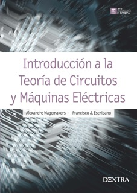
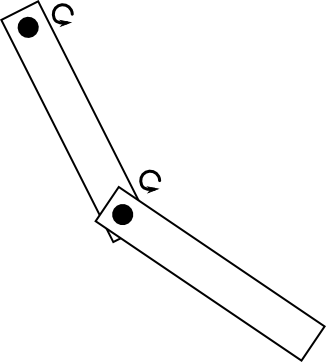
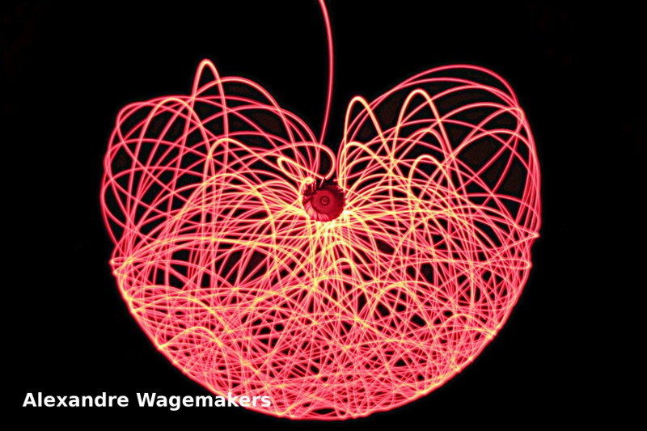
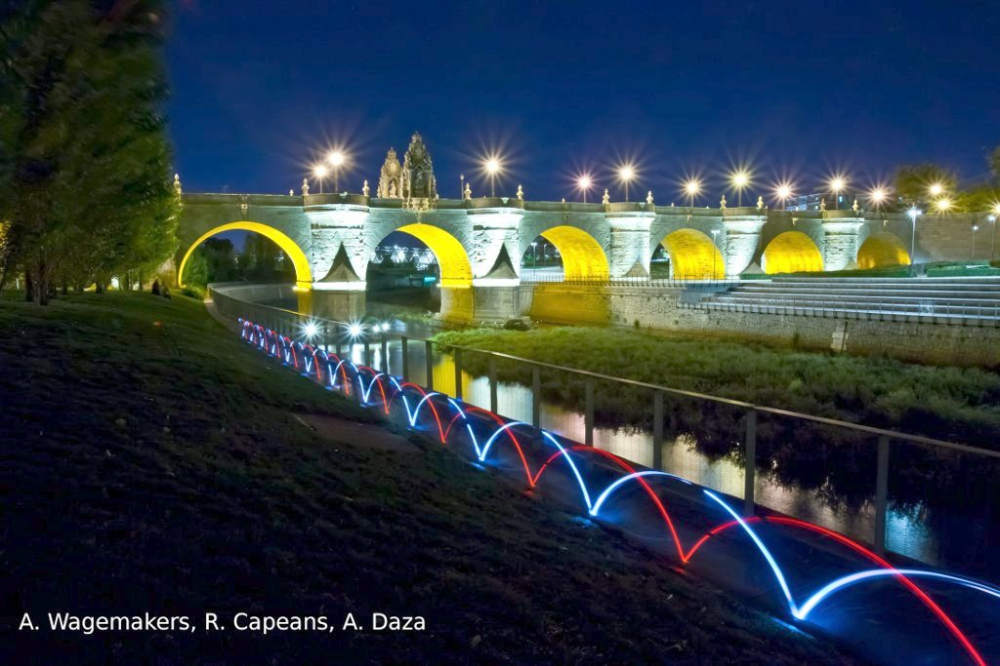
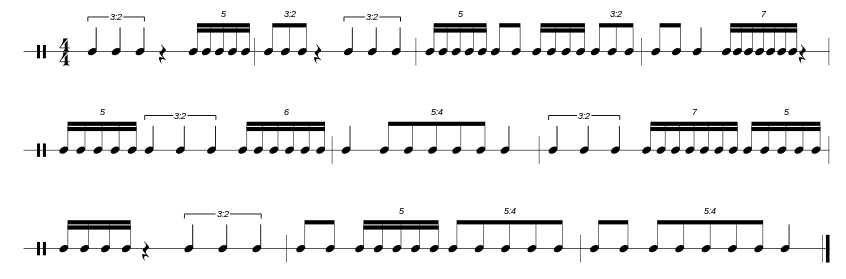
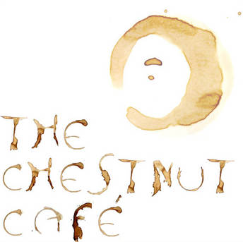
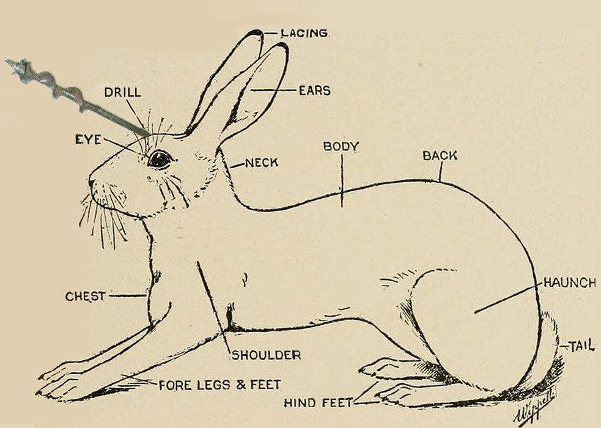

Alexandre Wagemakers
Current Position:
Assistant Profesor at University Rey Juan CarlosDepartment of Physics
Madrid Spain
New Book

Introducción a la teoría de circuitos y máquinas eléctricas
A. Wagemakers and F. J. Escribano
434 pages Editorial Dextra, 2017Research
Publications
- David Valle, Alexandre Wagemakers, and Miguel A. F. Sanjuán. Deep Learning-based Analysis of Basins of Attraction.Chaos 34, 033105 (2024) https://doi.org/10.1063/5.0159656
- Juan M. Muñoz, Alexandre Wagemakers, Miguel A. F. Sanjuán. Planetary influences on the solar cycle: A nonlinear dynamics approach, Chaos, 33 123102, 2023. https://doi.org/10.1063/5.0166920
- Alexandre Wagemakers, Alvar Daza and Miguel AF Sanjuán. Using the basin entropy to explore bifurcations. Chaos Solitons and Fractals, 175, 113963, 2023. https://doi.org/10.1016/j.chaos.2023.113963
- George Datseris, Kalel Luiz Rossi, Alexandre Wagemakers. Framework for global stability analysis of dynamical systems. Chaos 33, 073151, 2023. https://doi.org/10.1063/5.0159675
- George Datseris and Alexandre Wagemakers. Effortless estimation of basins of attraction. Chaos 32, 023104, 2022. https://doi.org/10.1063/5.0076568
- Alvar Daza, Alexandre Wagemakers and Miguel A.F. Sanjuán.Classifying basins of attraction using the basin entropy. Chaos, Solitons and Fractals 159, 112112, 2022. https://doi.org/10.1016/j.chaos.2022.112112
- David Valle, Alexandre Wagemakers, Alvar Daza and Miguel A. F. Sanjuán. Characterization of Fractal Basins Using Deep Convolutional Neural Networks. International Journal of Bifurcation and Chaos, 32, 13, 2250200, 2022. https://doi.org/10.1142/S0218127422502005
- Andreu Puy, Alvar Daza, Alexandre Wagemakers, Miguel A. F. Sanjuán. A test for fractal boundaries based on the basin entropy. Commun Nonlinear Sci Numer Simulat, 95, 105588, 2021. https://doi.org/10.1016/j.cnsns.2020.105588
- Alexandre Wagemakers, Alvar Daza and Miguel AF Sanjuán. How to detect Wada Basins. Discrete and Continuous Dynamical Systems B, 26, 717-739 , 2021. https://doi.org/10.3934/dcdsb.2020330
- Alexandre Wagemakers, Alvar Daza, and Miguel A.F. Sanjuán. The saddle-straddle method to test for Wada basins. Commun Nonlinear Sci Numer Simulat 84, 105167, 2020.
- Francisco J. Escribano, Alexandre Wagemakers. Performance Analysis of QAM-MPPM in Turbulence-Free FSO Channels: Accurate Derivations and Practical Approximations. IEEE System Journal 99, 1-11, 2020.
- Francisco J. Escribano, Alexandre Wagemakers, Georges Kaddoum and Juan V.C. Evangelis. A Spatial Time-Frequency Hopping Index Modulated Scheme in Turbulence-free Optical Wireless Communication Channels. IEEE Transactions on Communication 68, 4437-4450, 2020
- F. J. Escribano, A. Wagemakers, G. Kaddoum and J. V. C. Evangelis. Design and Performance Analysis of an Index Time Frequency Modulation Scheme for Optical Communications. IEEE Journal of Selected Topics in Signal Processing. 2019
- F. J. Escribano, J. B. Sáez-Landete and A. Wagemakers. Chaos-Based Multicarrier VLC Modulator with Compensation of LED Nonlinearity. IEEE Transactions on Communication, 67, 590-598, 2019.
- A. Wagemakers, J. Used and M. A. F. Sanjuán. Reducing the number of time delays in coupled dynamical systems. EPJ Special Topics, 227, 1281-1289, 2018.
- A. Daza, A. Wagemakers, and M. A. F. Sanjuán. Ascertaining when a basin is Wada: the merging method. Sci. Rep. 8, 9954, 2018.
- A. Wagemakers and F. J. Escribano. Software-Defined Radio Proof-of-Concept for Chaos-Based Coded Modulations. In proceedings of the 22nd IEEE Symposium on Computers and Communications, 2017.
- A. Wagemakers and M. A. F. Sanjuán. A new method to reduce the number of time delays in a network. Sci. Rep. 7, 2744, 2017.
- A. Daza, B. Georgeot, D. Guéry-Odelin, A. Wagemakers, and M. A. F. Sanjuán. Chaotic dynamics and fractal structures in experiments with cold atoms Phys. Rev. A, 95:013629, 2017.
- A. Daza, A. Wagemakers, and M. A. F. Sanjuán. Wada property in systems with delay, Commun in Nonlinear Sci and Numer Simulat, 43:220-226, 2017.
- F. J. Escribano, J. B. Sáez-Landete and A. Wagemakers. Optimization of Chaos-based Coded Modulations for Compensation of Amplifier Nonlinearities. Electronic letters, 52:1855-1857, 2016.
- A. Daza, A. Wagemakers, B. Georgeot, D. Guéry-Odelin, and M. A. F. Sanjuán. Basin entropy: a new tool to analyze uncertainty in dynamical systems. Scientific Reports, 6, 31416, 2016.
- F. Escribano, G. Kaddoum, A. Wagemakers and P. Giard. Design of a New Differential Chaos-Shift-Keying System For Continuous Mobility, IEEE Transactions on Communications, 64:2066-2078, 2016.
- A. Daza, A. Wagemakers, M. A. F. Sanjuán and James A. Yorke. Testing for Basins of Wada. Scientific Reports, 5:16579, 2015.
- M. Uzuntarla, E. Yilmaz, A. Wagemakers and M. Ozer. Vibrational Resonance in a heterogeneous scale free network of neurons. Commun Nonlinear Sci Numer Simulat, 22:367-374, 2015.
- A. Nordenfelt, A. Wagemakers, and M. A. F. Sanjuán. Cyclic motifs as the governing topological factor in time-delayed oscillator networks. Phys Rev. E 90:052920, 2014.
- A. Wagemakers, E. Barreto, M. A. F. Sanjuán, and P. So. Control of Collective Network Chaos. Chaos, 24:023127, 2014.
- A. Nordenfelt, A. Wagemakers, and M. A. F. Sanjuán. Frequency dispersion in the time delayed Kuramoto model. Phys. Rev. E, 89:032905, 2014.
- F. J. Escribano, A. Wagemakers and M. A. F. Sanjuán. Chaos-Based Turbo Systems in Fading Channels, IEEE Transactions on Circuits and Systems-I, 61(2):530-541, 2014.
- A. Daza, A. Wagemakers, and M. A. F. Sanjuán. Strong Sensitivity of the Vibrational Resonance Induced by Fractal Structures. International Journal of Bifurcation and Chaos, 23(7):1350129, 2013.
- A. Wagemakers y M. A. F. Sanjuán. Electronic circuit implementation of the chaotic Rulkov neuron model, The Jounal of the Franklin Institute, 350:2901-2910, 2013.
- A. Daza, A. Wagemakers, S. Rajasekar and M. A. F. Sanjuán. Vibrational resonance in a time delay genetic network. Commun Nonlinear Sci Numer Simulat, 18:411-416, 2013.
- J. Used, A. Wagemakers y M. A. F. Sanjuán. Regularization of map-based neuron models using phase control, Discontinuity, Nonlinearity and Complexity, 1(1):69-78, 2012
- A. Wagemakers, F. J. Escribano, L. López, M. A. F. Sanjuán. Fixed-Point Iterative Decoders for Concatenated Chaos-Based Systems. IET Communications, 6:1278-1283, 2012.
- S. Rajasekar, J. Used, A. Wagemakers y M. A. F. Sanjuán. Vibrational Resonance in Biological Nonlinear Maps, Commun Nonlinear Sci Numer Simulat, 17:3435-3445, 2012.
- A. Wagemakers, S. Zambrano y M. A. F. Sanjuán. Partial Control of Trasient Chaos in Electronic Circuits, Int. J. Bifurcation and Chaos, 22:1250032, 2012.
- A. Wagemakers and M. A. F. Sanjuán. "Dynamical and Electronic Simulation of Genetic Networks: Modelling and Synchronization", ERCIM News82, 39-40, 2010
- I. T. Tokuda, A. Wagemakers and M. A. F. Sanjuán. "Predicting the synchronization of a network of electronic repressilators", Int. J. Bifurcation and Chaos, 20, 1751-1760, 2010
- A. Wagemakers, J. M. Buldú, M. A. F. Sanjuán, Oscar Luis, Adriana Izquierdo and Antonio Coloma. "Entraining synthetic genetic oscillators", CHAOS, 033139, 2009
- A. Wagemakers, J. M. Buldú, and M. A. F. Sanjuán. "Experimental demonstration of bidirectional chaotic communication by means of isochronal synchronization'', Europhys. Lett. 81, 40005 2008.
- J. M. Buldú, A. Wagemakers, M. A. F. Sanjuán, Antonio Coloma, and Oscar de Luís. "Redes genéticas sintéticas: De lo simple a lo complejo''. Revista Española de Física 21, 10 2007.
- I. Tokuda, A. Wagemakers, and M. A. F. Sanjuán. "Predicting Synchronization of an Electronic Genetic Network''. Bussei Kenkyu 87, 550 2007.
- J. M. Buldú, A. Wagemakers, M. A. F. Sanjuán, and Jordi García-Ojalvo. "Electronic design of synthetic genetic networks''. Int. J. Bifurcation and Chaos 17, 3507 2007.
- A. Wagemakers, J. M. Buldú, and M. A. F. Sanjuán. "Isochronous synchronization in mutually coupled chaotic circuits''. Chaos 17, 023128 2007.
- A. Wagemakers, J. M. Buldú, J. García-Ojalvo, and M. A. F. Sanjuán. "Synchronization of electronic genetic networks''. Chaos 16, 013127 2006.
- A. Wagemakers, J. M. Casado, M. A. F. Sanjuán, and K. Aihara."Building electronic bursters with the Morris-Lecar neuron model''. Int. J. Bifurcation and Chaos 16, 3617 2006.
Book Chapter
- Alexandre Wagemakers, Alvar Daza, and Miguel A. F. Sanjuán. Electronic Modeling of Synthetic Genetic Networks. In K. Iniewski and S. Carrara, editors,Handbook of Bioelectronics. Directly interfacing electronics and biological systems. Cambridge University Press, 2014.
- Alexandre Wagemakers and Miguel A. F. Sanjuán, editors. Physics of Complex Systems and Life Sciences. Research Signpost, India, (2008). Note: ISBN:978-81-308-0170-4.
- Alexandre Wagemakers and Miguel A. F. Sanjuán. Physics of Complex Systems and Life Sciences, chapter Simulation of a genetic oscillator with electronic circuits, 193. Research Signpost, India, ISBN:978-81-308-0170-4, (2008).
PhD Thesis
Electronic Modelling of Complex Dynamics, November 2008.Master Thesis
Sincronización de circuitos caóticos para las comunicaciones privadas, October 2003.Teaching
Graduate courses
| Course | years | Material |
BiophysicsMaster in Complexity |
2009-2013 |
- |
Dynamical Models in BiologyMaster in Complexity |
2009-2013 |
Exercises (in Spanish) |
Dynamical Systems LabsMaster in Complexity |
2009-2013 |
Práctica 1 Práctica 2 Práctica 3 Práctica 4 |
Electromagnetic Propagation modelsMaster in mobile networks |
2008-2010 |
Slides (in spanish): Tema 1: Introduction Tema 2: Deterministic models Tema 3: Propagation in urban scenarios Tema 4: Stochastic models I Tema 5: Stochastic models II |
Distribution of the Electrical EnergyMaster in mobile networks |
2008-2009 2012-2013 |
Undergraduate course:
| Course | years | Material |
Physics Ifor engineers |
2011-2012 | - |
Physics IIfor engineers and scientists |
2009-2013 | - |
Electromagnetismfor engineers |
2012-2013 | - |
Circuit Theoryfor engineers |
2008-2013 | - |
Introduction to acousticsfor engineers |
2008-2000 | Lecture notes (in Spanish) |
Computer sciencefor engineers |
2010-2012 | - |
Side projects
Here you can find some projects that I developed for fun or for teaching.Double Pendulum
Picture of the chaotic trajectory of a double pendulum. The photograph has been taken with a digital camera
in long exposure mode. A similar picture has been published
in the FotCiencia 2008 catalog.
Pictures of the chaotic trajectory of a double pendulum.
The photograph was made with a digital camera in long exposure mode.
The double pendulum is a very simple mechanical system that behave in a
fascinating way. It consists in two articulated rods that are linked
together. Each one can rotate freely on its axis.

If we stick a little laser led on the end of the lower rod, we can capture its motion with a camera. Results are beautiful:

Cycloids and bridges
As you ride your bicycle, without knowing you are drawing beautiful curves called cycloids. We took this picture with my collegues Alvar Daza and Rubén Capeans in Madrid near the bridge of Toledo. We attached two led flashlight on the wheels and just ride the bike while the camera was capturing the movement.

Physics with Javascript
This is a collection of javascript application for undergraduate students. They are intended to work on any device, you just need a modern browser with javascript enabled.
Up to now we have two examples programmed: These apps have been programmed by Alvaro Aranda Jimenéz as his degree final project under my direction.
Music
Learn drums with Random Grooves
If you are interested in music notation, I develloped a web page where you can generate the rhythms randomly. This is an open source project that can downloaded here.

The Chestnut Café
I play drum on my spare time, you can listen to me playing with The Chestnut Café on Bandcamp

Conejo Taladro
Another musical project: Conejo Taladro
